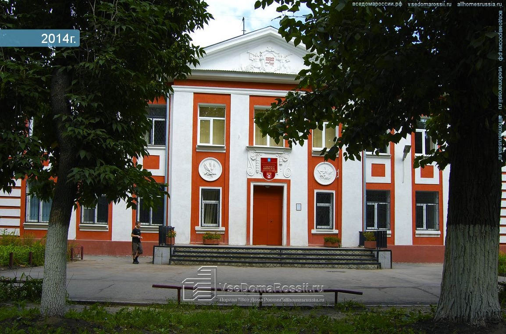
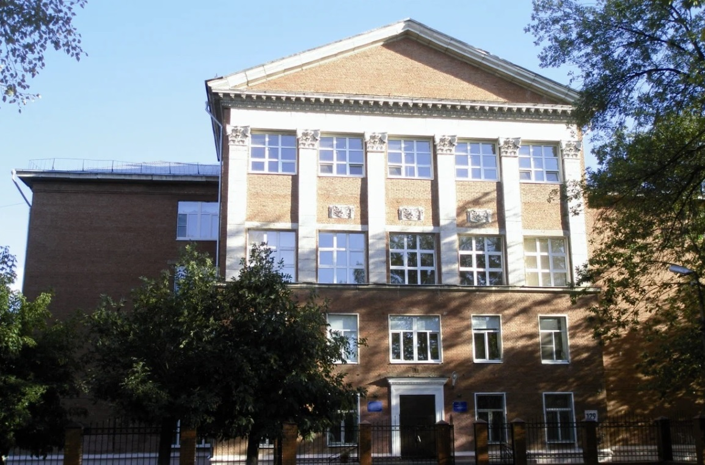
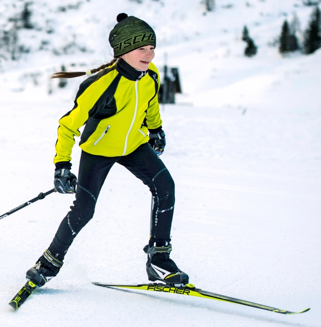
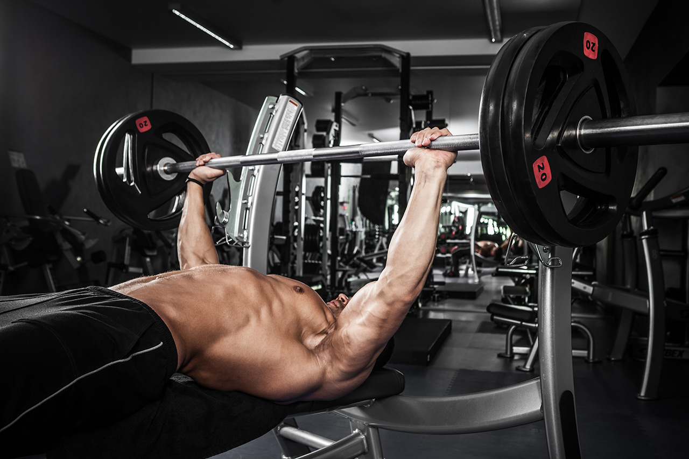

Проходил подготовительные курсы к первому классу в Кадетской школе, затем поступил в лицей (ЛАП 135) и закончил там 11 классов. Не помню свой средний балл диплома, но троек не было. После школы поступил в Самарский университет на факультет информатики. В данный момент прохожу обучение в автошколе "Лидер".
 В детстве занимался в спортивной школе "Беговыми лыжами". Каждое лето катался на горном велосипеде, отдыхая на турбазе "Зеленый берег" Занимался пауэрлифтингом дома, а так же в зале.
 